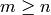
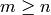
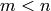

Reduction to condensed form¶
Hermitian to tridiagonal¶
The currently best-known algorithms for computing eigenpairs of dense Hermitian matrices begin by performing a unitary similarity transformation which reduces the matrix to real symmetric tridiagonal form (usually through Householder transformations). This routine performs said reduction on a Hermitian matrix and stores the scaled Householder vectors in place of the introduced zeroes.
- void HermitianTridiag(UpperOrLower uplo, Matrix<R>& A)¶
Overwrites the main and sub (super) diagonal of the real matrix A with its similar symmetric tridiagonal matrix and stores the scaled Householder vectors below (above) its tridiagonal entries.
- void HermitianTridiag(UpperOrLower uplo, Matrix<Complex<R>>& A, Matrix<Complex<R>>& t)¶
Similar to above, but the complex Hermitian matrix is reduced to real symmetric tridiagonal form, with the added complication of needing to also store the phase information for the Householder vectors (the scaling can be inferred since the Householder vectors must be unit length); the scales with proper phases are returned in the column vector t.
- void HermitianTridiag(UpperOrLower uplo, DistMatrix<R>& A)¶
Overwrites the main and sub (super) diagonal of the real distributed matrix A with its similar symmetric tridiagonal matrix and stores the scaled Householder vectors below (above) its tridiagonal entries.
- void HermitianTridiag(UpperOrLower uplo, DistMatrix<Complex<R>>& A, DistMatrix<Complex<R>, STAR, STAR>& t)¶
Similar to above, but the complex Hermitian matrix is reduced to real symmetric tridiagonal form, with the added complication of needing to also store the phase information for the Householder vectors (the scaling can be inferred since the Householder vectors must be unit length); the scales with proper phases are returned in the column vector t.
Please see the Tuning parameters section for extensive information on maximizing the performance of Householder tridiagonalization.
General to Hessenberg¶
Not yet written, but it is planned and relatively straightforward after writing the reductions to tridiagonal and bidiagonal form.
General to bidiagonal¶
Reduces a general fully-populated  matrix to bidiagonal form
through two-sided Householder transformations; when the , the
result is upper bidiagonal, otherwise it is lower bidiagonal. This routine is
most commonly used as a preprocessing step in computing the SVD of a general
matrix.
matrix to bidiagonal form
through two-sided Householder transformations; when the , the
result is upper bidiagonal, otherwise it is lower bidiagonal. This routine is
most commonly used as a preprocessing step in computing the SVD of a general
matrix.
- void Bidiag(Matrix<R>& A)¶
Overwrites the main and sub (or super) diagonal of the real matrix A with the resulting bidiagonal matrix and stores the scaled Householder vectors in the remainder of the matrix.
- void Bidiag(Matrix<Complex<R>>& A, Matrix<Complex<R>>& tP, Matrix<Complex<R>>& tQ)¶
Same as above, but the complex scalings for the Householder reflectors are returned in the vectors tP and tQ.
- void Bidiag(DistMatrix<R>& A)¶
Overwrites the main and sub (or super) diagonal of the real distributed matrix A with the resulting bidiagonal matrix and stores the scaled Householder vectors in the remainder of the matrix.
Note
The  case is not yet supported.
- void Bidiag(DistMatrix<Complex<R>>& A, DistMatrix<Complex<R>, STAR, STAR>& tP, DistMatrix<Complex<R>, STAR, STAR>& tQ)¶
Same as above, but the complex scalings for the Householder reflectors are returned in the vectors tP and tQ.
Note
The case is not yet supported.